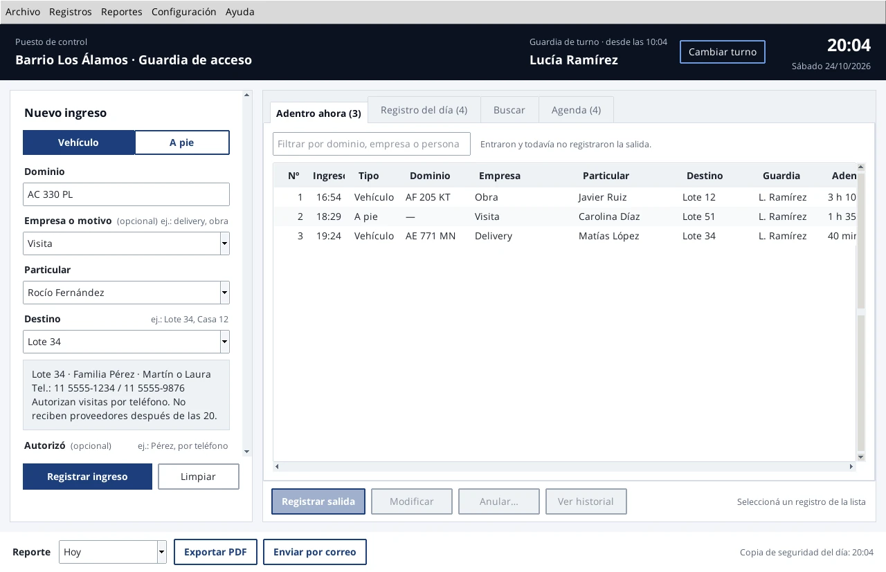

Cuando llega alguien
Se cargan el dominio, quién es y a dónde va, en vehículo o a pie. Al escribir el destino aparece la ficha de la agenda con el teléfono para avisar, y se puede anotar quién autorizó el ingreso. La fecha, la hora y la guardia de turno se registran solas.